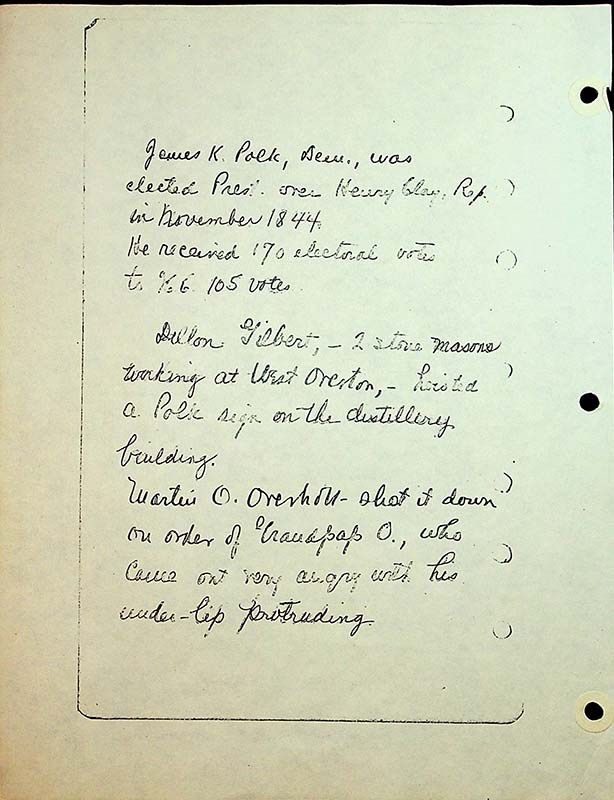

James K. Polk, dem, was elected Pres. over Henry Clay, Rep. in November 1844. He received 170 electoral votes to HC 105 votes.
Dillon Gilbert- 2 stone masons working at West Overton,- hoisted a Polk sign on the distillery building.
Martin O. Overholt shot it down on order of Grandpap O, who came out very angry with his underlip protruding.